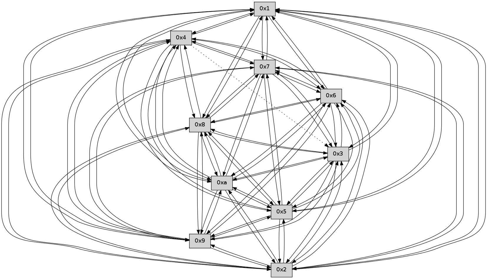

>> << IDX [start] -100 -25 -5 +0 +5 +25 +100 [305.435054064]
 Previous packets
300.008127 beacon08(faad) #0 coord=01,02,03,04,05,06,07,0a,09,08 cycle=688.0ms assoc 64 11 6c
300.019260 [Hello(3): seq=196 sym=5,7,6,8,9,10,1 sysInfo= stat=5:11,0,0,0/7:14,0,0,0/6:9,0,0,0/8:15,0,0,0/9:6,0,0,0/10:14,0,0,0/1:7,0,0,0]
300.023292 [Hello(4): seq=196 sym=5,7,6,2,9,10,1 asym=3,8 sysInfo= stat=5:12,0,0,0/7:3,0,0,0/6:8,0,0,0/2:14,0,0,0/9:12,0,0,0/10:8,0,0,0/1:0,0,0,0/3:1,0,0,0/8:8,0,0,0]
300.031065 [Hello(2): seq=193 sym=4,5,7,6,3,9,8,10,1 sysInfo= stat=4:2,0,0,0/5:6,0,0,0/7:9,0,0,0/6:7,0,0,0/3:9,0,0,0/9:9,0,0,0/8:6,0,0,0/10:3,0,0,0/1:4,0,0,0]
----------------------------------------------------------------------
300.706267 beacon01(faad) #0 coord=01,02,03,04,05,06,07,0a,09,08 cycle=688.0ms assoc
-- color-indic=0 64 38 b9
300.716249 beacon02(faad) #0 coord=01,02,03,04,05,06,07,0a,09,08 cycle=688.0ms assoc 64 ab 88
300.726248 beacon03(faad) #0 coord=01,02,03,04,05,06,07,0a,09,08 cycle=688.0ms assoc 64 d1 c5
300.736251 beacon04(faad) #0 coord=01,02,03,04,05,06,07,0a,09,08 cycle=688.0ms assoc 64 a6 2f
300.746250 beacon05(faad) #0 coord=01,02,03,04,05,06,07,0a,09,08 cycle=688.0ms assoc 64 dc 62
300.756249 beacon06(faad) #0 coord=01,02,03,04,05,06,07,0a,09,08 cycle=688.0ms assoc 64 52 b5
300.766251 beacon07(faad) #0 coord=01,02,03,04,05,06,07,0a,09,08 cycle=688.0ms assoc 64 28 f8
300.776254 beacon0a(faad) #0 coord=01,02,03,04,05,06,07,0a,09,08 cycle=688.0ms assoc 64 59 f3
300.786255 beacon09(faad) #0 coord=01,02,03,04,05,06,07,0a,09,08 cycle=688.0ms assoc 64 d7 24
300.796255 beacon08(faad) #0 coord=01,02,03,04,05,06,07,0a,09,08 cycle=688.0ms assoc 64 ad 69
300.807420 [Hello(10): seq=128 sym=6,3,2,5,9,8,7,4,1 sysInfo= stat=6:7,0,0,0/3:6,0,0,0/2:3,0,0,0/5:3,0,0,0/9:7,0,0,0/8:15,0,0,0/7:11,0,0,0/4:3,0,0,0/1:8,0,0,0]
300.810752 [Hello(6): seq=196 sym=2,3,5,4,7,9,8,10,1 sysInfo= stat=2:8,0,0,0/3:5,0,0,0/5:10,0,0,0/4:14,0,0,0/7:1,0,0,0/9:7,0,0,0/8:8,0,0,0/10:7,0,0,0/1:6,0,0,0]
300.818878 [Hello(7): seq=196 sym=2,3,5,6,4,8,9,10,1 sysInfo= stat=2:3,0,0,0/3:3,0,0,0/5:13,0,0,0/6:13,0,0,0/4:3,0,0,0/8:4,0,0,0/9:6,0,0,0/10:3,0,0,0/1:1,0,0,0]
300.821710 [Hello(9): seq=139 sym=5,2,3,4,7,6,8,10,1 sysInfo= stat=5:11,0,0,0/2:11,0,0,0/3:11,0,0,0/4:12,0,0,0/7:5,0,0,0/6:15,0,0,0/8:2,0,0,0/10:1,0,0,0/1:5,0,0,0]
300.824646 [Hello(8): seq=139 sym=5,2,3,7,6,9,10,1 sysInfo= stat=5:4,0,0,0/2:5,0,0,0/3:4,0,0,0/7:7,0,0,0/6:12,0,0,0/9:13,0,0,0/10:13,0,0,0/1:3,0,0,0]
----------------------------------------------------------------------
301.494400 beacon01(faad) #0 coord=01,02,03,04,05,06,07,0a,09,08 cycle=688.0ms assoc
-- color-indic=0 64 2c d7
301.504383 beacon02(faad) #0 coord=01,02,03,04,05,06,07,0a,09,08 cycle=688.0ms assoc 64 bf e6
301.514382 beacon03(faad) #0 coord=01,02,03,04,05,06,07,0a,09,08 cycle=688.0ms assoc 64 c5 ab
301.524384 beacon04(faad) #0 coord=01,02,03,04,05,06,07,0a,09,08 cycle=688.0ms assoc 64 b2 41
301.534382 beacon05(faad) #0 coord=01,02,03,04,05,06,07,0a,09,08 cycle=688.0ms assoc 64 c8 0c
301.544383 beacon06(faad) #0 coord=01,02,03,04,05,06,07,0a,09,08 cycle=688.0ms assoc 64 46 db
301.554383 beacon07(faad) #0 coord=01,02,03,04,05,06,07,0a,09,08 cycle=688.0ms assoc 64 3c 96
301.564387 beacon0a(faad) #0 coord=01,02,03,04,05,06,07,0a,09,08 cycle=688.0ms assoc 64 4d 9d
301.574389 beacon09(faad) #0 coord=01,02,03,04,05,06,07,0a,09,08 cycle=688.0ms assoc 64 c3 4a
301.584390 beacon08(faad) #0 coord=01,02,03,04,05,06,07,0a,09,08 cycle=688.0ms assoc 64 b9 07
301.596843 [Hello(4): seq=197 sym=5,7,6,2,9,10,1 asym=3,8 sysInfo= stat=5:12,0,0,0/7:4,0,0,0/6:9,0,0,0/2:15,0,0,0/9:13,0,0,0/10:9,0,0,0/1:0,0,0,0/3:1,0,0,0/8:9,0,0,0]
301.600156 [Hello(5): seq=197 sym=7,6,4,3,1,9,8,10,2 sysInfo= stat=7:1,0,0,0/6:12,0,0,0/4:3,0,0,0/3:14,0,0,0/1:0,0,0,0/9:12,0,0,0/8:3,0,0,0/10:6,0,0,0/2:4,0,0,0]
301.602982 [Hello(2): seq=194 sym=4,5,7,6,3,9,8,10,1 sysInfo= stat=4:2,0,0,0/5:6,0,0,0/7:10,0,0,0/6:8,0,0,0/3:9,0,0,0/9:10,0,0,0/8:7,0,0,0/10:4,0,0,0/1:4,0,0,0]
301.610477 [Hello(3): seq=197 sym=5,7,6,2,8,9,10,1 sysInfo= stat=5:11,0,0,0/7:15,0,0,0/6:10,0,0,0/2:0,0,0,0/8:0,0,0,0/9:7,0,0,0/10:15,0,0,0/1:7,0,0,0]
----------------------------------------------------------------------
302.282530 beacon01(faad) #0 coord=01,02,03,04,05,06,07,0a,09,08 cycle=688.0ms assoc
-- color-indic=0 64 90 d2
302.292514 beacon02(faad) #0 coord=01,02,03,04,05,06,07,0a,09,08 cycle=688.0ms assoc 64 03 e3
302.302512 beacon03(faad) #0 coord=01,02,03,04,05,06,07,0a,09,08 cycle=688.0ms assoc 64 79 ae
302.312514 beacon04(faad) #0 coord=01,02,03,04,05,06,07,0a,09,08 cycle=688.0ms assoc 64 0e 44
302.322513 beacon05(faad) #0 coord=01,02,03,04,05,06,07,0a,09,08 cycle=688.0ms assoc 64 74 09
302.332513 beacon06(faad) #0 coord=01,02,03,04,05,06,07,0a,09,08 cycle=688.0ms assoc 64 fa de
302.342514 beacon07(faad) #0 coord=01,02,03,04,05,06,07,0a,09,08 cycle=688.0ms assoc 64 80 93
302.352519 beacon0a(faad) #0 coord=01,02,03,04,05,06,07,0a,09,08 cycle=688.0ms assoc 64 f1 98
302.362518 beacon09(faad) #0 coord=01,02,03,04,05,06,07,0a,09,08 cycle=688.0ms assoc 64 7f 4f
302.372520 beacon08(faad) #0 coord=01,02,03,04,05,06,07,0a,09,08 cycle=688.0ms assoc 64 05 02
302.383965 [Hello(8): seq=140 sym=5,2,3,7,6,9,10,1 sysInfo= stat=5:5,0,0,0/2:6,0,0,0/3:5,0,0,0/7:7,0,0,0/6:12,0,0,0/9:13,0,0,0/10:13,0,0,0/1:4,0,0,0]
302.387634 [Hello(6): seq=197 sym=2,3,5,4,7,9,8,10,1 sysInfo= stat=2:9,0,0,0/3:6,0,0,0/5:11,0,0,0/4:14,0,0,0/7:2,0,0,0/9:8,0,0,0/8:9,0,0,0/10:7,0,0,0/1:7,0,0,0]
302.396553 [Hello(9): seq=140 sym=5,2,3,4,7,6,8,10,1 sysInfo= stat=5:12,0,0,0/2:12,0,0,0/3:12,0,0,0/4:12,0,0,0/7:5,0,0,0/6:15,0,0,0/8:3,0,0,0/10:1,0,0,0/1:5,0,0,0]
302.401044 [Hello(10): seq=129 sym=6,3,2,5,9,8,7,4,1 sysInfo= stat=6:8,0,0,0/3:7,0,0,0/2:4,0,0,0/5:4,0,0,0/9:8,0,0,0/8:0,0,0,0/7:12,0,0,0/4:3,0,0,0/1:9,0,0,0]
302.404543 [Hello(7): seq=197 sym=2,3,5,6,4,8,9,10,1 sysInfo= stat=2:4,0,0,0/3:4,0,0,0/5:14,0,0,0/6:13,0,0,0/4:3,0,0,0/8:5,0,0,0/9:7,0,0,0/10:3,0,0,0/1:2,0,0,0]
----------------------------------------------------------------------
303.070661 beacon01(faad) #0 coord=01,02,03,04,05,06,07,0a,09,08 cycle=688.0ms assoc
-- color-indic=0 64 54 dc
303.080643 beacon02(faad) #0 coord=01,02,03,04,05,06,07,0a,09,08 cycle=688.0ms assoc 64 c7 ed
303.090643 beacon03(faad) #0 coord=01,02,03,04,05,06,07,0a,09,08 cycle=688.0ms assoc 64 bd a0
303.100645 beacon04(faad) #0 coord=01,02,03,04,05,06,07,0a,09,08 cycle=688.0ms assoc 64 ca 4a
303.110643 beacon05(faad) #0 coord=01,02,03,04,05,06,07,0a,09,08 cycle=688.0ms assoc 64 b0 07
303.120643 beacon06(faad) #0 coord=01,02,03,04,05,06,07,0a,09,08 cycle=688.0ms assoc 64 3e d0
303.130644 beacon07(faad) #0 coord=01,02,03,04,05,06,07,0a,09,08 cycle=688.0ms assoc 64 44 9d
303.140651 beacon0a(faad) #0 coord=01,02,03,04,05,06,07,0a,09,08 cycle=688.0ms assoc 64 35 96
303.150649 beacon09(faad) #0 coord=01,02,03,04,05,06,07,0a,09,08 cycle=688.0ms assoc 64 bb 41
303.160648 beacon08(faad) #0 coord=01,02,03,04,05,06,07,0a,09,08 cycle=688.0ms assoc 64 c1 0c
303.172135 [Hello(5): seq=198 sym=7,6,4,3,1,9,8,10,2 sysInfo= stat=7:2,0,0,0/6:13,0,0,0/4:3,0,0,0/3:15,0,0,0/1:0,0,0,0/9:13,0,0,0/8:4,0,0,0/10:7,0,0,0/2:5,0,0,0]
303.176729 [Hello(3): seq=198 sym=5,7,6,2,8,9,10,1 sysInfo= stat=5:11,0,0,0/7:0,0,0,0/6:11,0,0,0/2:0,0,0,0/8:1,0,0,0/9:8,0,0,0/10:0,0,0,0/1:7,0,0,0]
303.182972 [Hello(4): seq=198 sym=5,7,6,2,9,10,1 asym=3,8 sysInfo= stat=5:13,0,0,0/7:5,0,0,0/6:10,0,0,0/2:0,0,0,0/9:14,0,0,0/10:10,0,0,0/1:0,0,0,0/3:2,0,0,0/8:10,0,0,0]
303.186790 [Hello(2): seq=195 sym=4,5,7,6,3,9,8,10,1 sysInfo= stat=4:2,0,0,0/5:6,0,0,0/7:11,0,0,0/6:9,0,0,0/3:10,0,0,0/9:11,0,0,0/8:8,0,0,0/10:5,0,0,0/1:4,0,0,0]
----------------------------------------------------------------------
303.858791 beacon01(faad) #0 coord=01,02,03,04,05,06,07,0a,09,08 cycle=688.0ms assoc
-- color-indic=0 64 e8 d9
303.868774 beacon02(faad) #0 coord=01,02,03,04,05,06,07,0a,09,08 cycle=688.0ms assoc 64 7b e8
303.878774 beacon03(faad) #0 coord=01,02,03,04,05,06,07,0a,09,08 cycle=688.0ms assoc 64 01 a5
303.888774 beacon04(faad) #0 coord=01,02,03,04,05,06,07,0a,09,08 cycle=688.0ms assoc 64 76 4f
303.898775 beacon05(faad) #0 coord=01,02,03,04,05,06,07,0a,09,08 cycle=688.0ms assoc 64 0c 02
303.908775 beacon06(faad) #0 coord=01,02,03,04,05,06,07,0a,09,08 cycle=688.0ms assoc 64 82 d5
303.918775 beacon07(faad) #0 coord=01,02,03,04,05,06,07,0a,09,08 cycle=688.0ms assoc 64 f8 98
303.928780 beacon0a(faad) #0 coord=01,02,03,04,05,06,07,0a,09,08 cycle=688.0ms assoc 64 89 93
303.938780 beacon09(faad) #0 coord=01,02,03,04,05,06,07,0a,09,08 cycle=688.0ms assoc 64 07 44
303.948780 beacon08(faad) #0 coord=01,02,03,04,05,06,07,0a,09,08 cycle=688.0ms assoc 64 7d 09
303.959943 [Hello(10): seq=130 sym=6,3,2,5,9,8,7,4,1 sysInfo= stat=6:8,0,0,0/3:8,0,0,0/2:5,0,0,0/5:4,0,0,0/9:8,0,0,0/8:0,0,0,0/7:13,0,0,0/4:4,0,0,0/1:10,0,0,0]
303.971416 [Hello(9): seq=141 sym=5,2,3,4,7,6,8,10,1 sysInfo= stat=5:13,0,0,0/2:13,0,0,0/3:13,0,0,0/4:13,0,0,0/7:6,0,0,0/6:15,0,0,0/8:3,0,0,0/10:2,0,0,0/1:5,0,0,0]
303.974273 [Hello(8): seq=141 sym=5,2,3,4,7,6,9,10,1 sysInfo= stat=5:6,0,0,0/2:7,0,0,0/3:6,0,0,0/4:0,0,0,0/7:8,0,0,0/6:13,0,0,0/9:14,0,0,0/10:14,0,0,0/1:4,0,0,0]
----------------------------------------------------------------------
304.646923 beacon01(faad) #0 coord=01,02,03,04,05,06,07,0a,09,08 cycle=688.0ms assoc
-- color-indic=0 64 dc c1
304.656905 beacon02(faad) #0 coord=01,02,03,04,05,06,07,0a,09,08 cycle=688.0ms assoc 64 4f f0
304.666906 beacon03(faad) #0 coord=01,02,03,04,05,06,07,0a,09,08 cycle=688.0ms assoc 64 35 bd
304.676906 beacon04(faad) #0 coord=01,02,03,04,05,06,07,0a,09,08 cycle=688.0ms assoc 64 42 57
304.686906 beacon05(faad) #0 coord=01,02,03,04,05,06,07,0a,09,08 cycle=688.0ms assoc 64 38 1a
304.696905 beacon06(faad) #0 coord=01,02,03,04,05,06,07,0a,09,08 cycle=688.0ms assoc 64 b6 cd
304.706907 beacon07(faad) #0 coord=01,02,03,04,05,06,07,0a,09,08 cycle=688.0ms assoc 64 cc 80
304.716910 beacon0a(faad) #0 coord=01,02,03,04,05,06,07,0a,09,08 cycle=688.0ms assoc 64 bd 8b
304.726912 beacon09(faad) #0 coord=01,02,03,04,05,06,07,0a,09,08 cycle=688.0ms assoc 64 33 5c
304.736912 beacon08(faad) #0 coord=01,02,03,04,05,06,07,0a,09,08 cycle=688.0ms assoc 64 49 11
304.748713 [Hello(5): seq=199 sym=7,6,4,3,1,9,8,10,2 sysInfo= stat=7:3,0,0,0/6:13,0,0,0/4:4,0,0,0/3:0,0,0,0/1:0,0,0,0/9:14,0,0,0/8:5,0,0,0/10:8,0,0,0/2:6,0,0,0]
304.755240 [Hello(4): seq=199 sym=5,7,6,2,9,8,10,1 asym=3 sysInfo= stat=5:13,0,0,0/7:5,0,0,0/6:11,0,0,0/2:1,0,0,0/9:15,0,0,0/8:11,0,0,0/10:11,0,0,0/1:0,0,0,0/3:2,0,0,0]